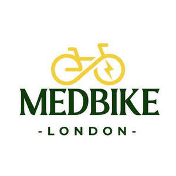

Trade Mark Journal No.2025/040 3 October 2025
UK00004267600 22 September 2025 (6,7,9,11,12,21,28,35,37,39,45)

- Class 6
- Parking bicycles (Installations, of metal for -).
- Class 7
- Bicycle dynamos; Dynamos for bicycle.
- Class 9
- Helmets for bicycles; Bicycle helmets; Computers for use with bicycles; Bicycle speedometers; Motorcycle helmets; Locks (electric) for bicycles.
- Class 11
- Bicycle reflectors; Bicycle lamps.
- Class 12
- Bicycles; Road bikes; Mountain bikes; Saddles for bicycles, cycles or motorcycles; Derailleurs for bicycles; Folding bikes; Mudguards for bicycles; Mudguards for two-wheeled bicycles; Kickstands for bicycles; Wheels for bicycles; Rims for bicycles; Handlebars for bicycles, cycles; Tires for bicycles; Drivetrains for bicycles; Freewheels for bicycles; Saddles for bicycles; Racing bicycles; Cranks for bicycles; Pedals for bicycles; Saddle covers for bicycles or motorcycles; Brakes for bicycles; Mudguards for two-wheeled motor vehicles or bicycles; Mountain bicycles; Chainwheels for bicycles; Wheels for bicycles, cycles; Panniers for motorcycles; Gear wheels for bicycles; Touring bicycles; Tyres for bicycles, cycles; Pedal bicycles; Tires for bicycles, cycles; Wheels being parts of bicycles; Gears for bicycles; Rims for wheels of bicycles, cycles; Frames for bicycles; Road racing bicycles; Spokes for bicycles; Spokes of bicycles; Tubeless tyres for bicycles; Kickstands for motorcycles; Bike bags; Rims for wheels of bicycles; Bicycle handlebars; Hubs for bicycles; Tandem bicycles; Tubeless tires for bicycles; Tyres for motorcycles; Bicycle kickstands; Bags for bicycles; Bags [panniers] for bicycles; Handlebar grips for bicycles; Luggage racks for bicycles; Bicycle tyres; Brakes for bicycles, cycles; Tires for children's bicycles; Balance bicycles [vehicles]; Handlebars [bicycle parts]; Bicycle saddles; Wheel rims for bicycles; Bicycle wheels; Bicycle mudguards; Folding bicycles; Stands for bicycles, cycles [parts of bicycles, cycles]; Bicycle rims; Spindles of bicycles; Tubeless tires [tyres] for bicycles, cycles; Bicycle tires; Front forks for bicycles; Spokes for bicycles, cycles; Inner tubes [for two-wheeled motor vehicles or bicycles]; Bicycle cranks; Wheel hubs for bicycles; Frames for motorcycles; Bicycle pedals; Stabilisers [wheels] for use on bicycles; Bells for bicycles; Forks [bicycle parts]; Electric bicycles; Bicycle sprockets; Frames for bicycles, cycles; Handlebar ends for bicycles; Panniers adapted for bicycles; Rims for bicycle wheels; Bicycle brakes; Scooters [vehicles]; Frames, for luggage carriers, for bicycles; Scooters; Air pumps for two-wheeled motor vehicles or bicycles; Saddlebags adapted for bicycles; Tyres for two-wheeled vehicles; Sissy bars for bicycles; Wheel rims for motorcycles; Bicycle tires [tyres]; Luggage carriers for bicycles; Non-motorized scooters [vehicles]; Saddle covers for bicycles; Trailers for transporting bicycles; Bicycle gears; Bells for bicycles, cycles; Brake cables for bicycles; Motorcycle saddles; Pumps for bicycle tyres; Delivery bicycles; Fittings for bicycles for carrying beverages; Fittings for bicycles for carrying luggage; Bicycle bells; Bicycle stabilisers; Bicycle frames; Roller chains for bicycles; Bicycle horns; Luggage racks for motorcycles; Scooters [for transportation]; Bicycle carriers; Dirt bikes; Bicycle spokes.
- Class 21
- Water bottles for bicycles.
- Class 28
- Exercise bikes; Toy bicycles; Balance bicycles [toys]; Stationary exercise bicycles; Bicycles (Stationary exercise -); Exercise bicycles (Stationary -); Children's toy bicycles other than for transport; Rollers for stationary exercise bicycles; Exercise bicycles (Rollers for stationary -).
- Class 35
- Retail services in relation to bicycles.
- Class 37
- Repair of bicycles.
- Class 39
- Rental of bicycles; Bicycle rental.
- Class 45
- Rental of bicycle helmets.
Medbike LTD